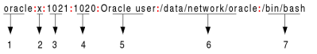

Where are stored the passwords hashes in Linux
Where Password Hashes are Stored in Linux?
Before we can crack the password hashes, we first need to know where they are stored. Traditionally(before 1988) password hashes for accounts were stored in the /etc/passwd file. However, this caused security issues since the file was readable by all users on the system. Now, instead of a password hash, this file contains an "x" to indicate that the password details are located(shadowed) in a different place: the /etc/shadow file. This file is only readable by the superuser (root), so there is far less of a security risk associated with this file.
/etc/shadow → Because of /etc/passwd file is is readable by any account on system, it is vulnerable. Most modern Linux and UNIX machines move the password hashes to another file /etc/shadow. This file is readable only by accounts with UID 0 (superuser privileges on the system). Machines with /etc/shadow file still have /etc/passwd but that file doesn't store passwords anymore but only user account information(UID and GID numbers).

1. Login Username
2. Encrypted Password: Usually password format is set to $id$salt$hashed
* means password never established! or !! means that the account is
locked.The $id is the algorithm used:
◇ if nothing is specified is DES (e.g: Kyq4bCxAXJkbg)
◇ _ is BSDi (e.g: _EQ0.jzhSVeUyoSqLupI)
◇ $1$ is MD5 Linux also know as md5crypt (e.g.: $1$etNnh7FA$OlM7eljE/B7F1J4XYNnk81)
◇ $2a$ is Blowfish
◇ $2$ is Blowfish
◇ $5$ is SHA-256
◇ $6$ is SHA-512
3. Last password change: Days since Jan 1, 1970 that password was last changed
4. Minimum : the number of days left before the user is allowed to change his/her password
5. Maximum : The maximum number of days the password is valid
6. Warn : The number of days before password is to expire
7. Inactive : The number of days after password expires that account is disabled
8. Expire : days since Jan 1, 1970 that account is disabled i.e. an absolute date specifying when the login may no longer be used
/etc/passwd → On some older UNIX or Linux systems, the password representations are stored here and it is readable by any account on system

1. Username
2. Password: An x character indicates that encrypted password is stored in /etc/shadow file
3. User ID (UID): Each user must be assigned a user ID (UID). UID 0 (zero) is reserved for root and UIDs 1-99 are reserved for other predefined accounts. Further UID 100-999 are reserved by system for administrative and system accounts/groups.
4. Group ID (GID): The primary group ID (stored in /etc/group file)
5. User ID Info(Gecos field): The comment field. It allow you to add extra information about the users
6. Home directory: The absolute path to the directory the user will be in when they log in. If this directory does not exists then users directory becomes /
7. Command/shell: The absolute path of a command or shell (/bin/bash). Typically, this is a shell
Combines account information from /etc/passwd and /etc/shadow
An important thing to note is that /etc/shadow and /etc/passwd have some overlapping content.
John the Ripper's tool suite provides a nifty tool(unshadow) to merge these two files into one.
unshadow /etc/passwd /etc/shadow > ourMergedFile
Bibliography:
http://raidersec.blogspot.com/2013/01/cracking-unix-passwords-with-john.html
https://www.cyberciti.biz/faq/understanding-etcshadow-file/